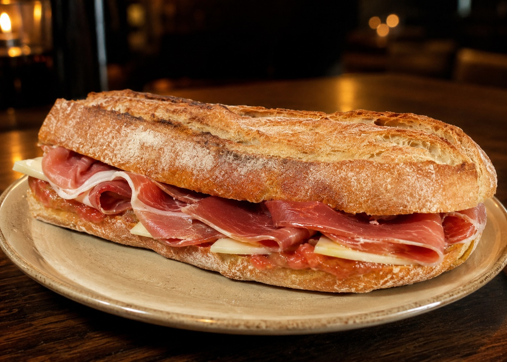
Primera hora
El Remedio de la Mañana
Luz suave, café y una conversación tranquila antes de que el día se acelere. Para quien madruga y para quien se lo merece.
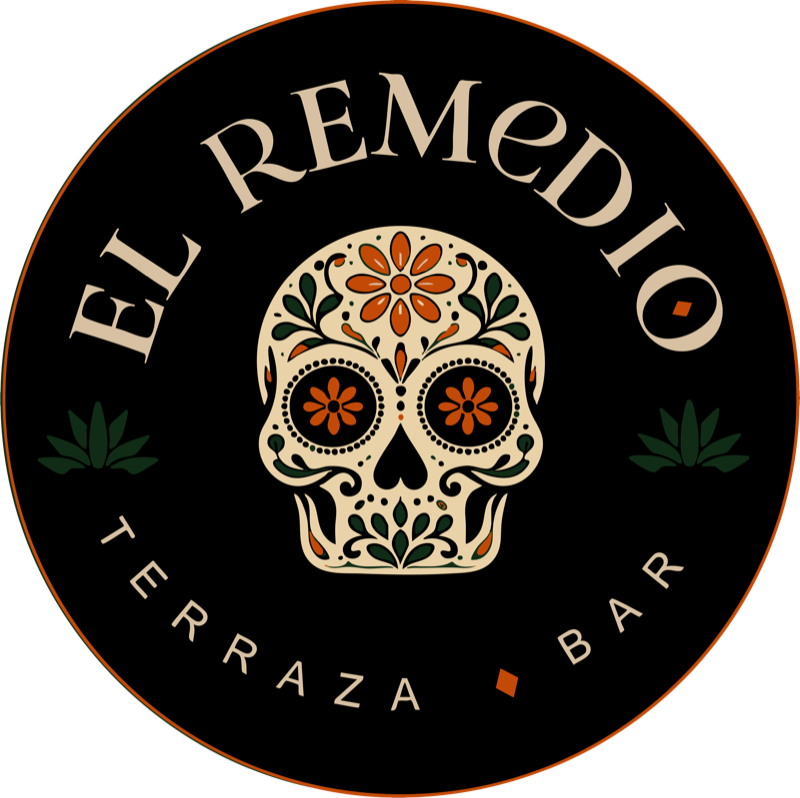
Valencia · Cocina latina contemporánea
Una casa latina en Valencia para empezar el día, alargar la sobremesa y quedarse un rato más. Cerca, cálida, sin prisa.
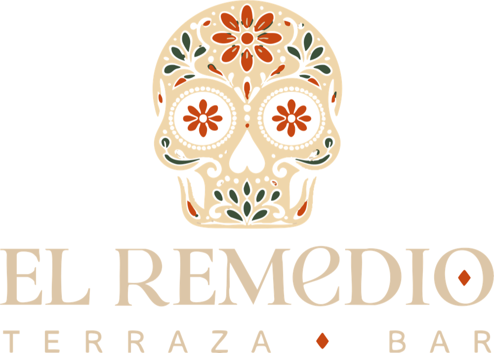
Quart 104Nuevo Centro
La casa
El Remedio es una casa latina contemporánea: cocina con memoria, mesa larga y conversación sin reloj. Aquí se viene a comer bien, pero sobre todo a estar con alguien.
Nos gusta la terraza al final de la tarde, el café que se alarga y la mesa que nadie quiere levantar.
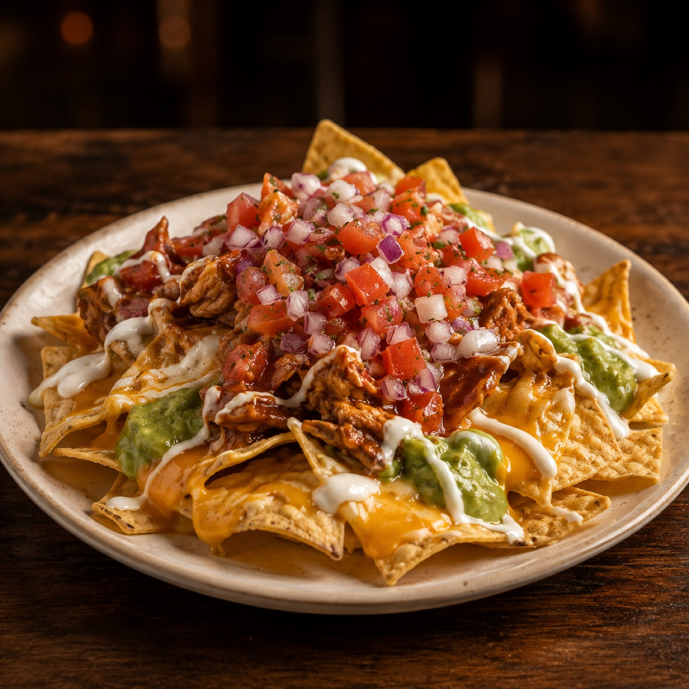
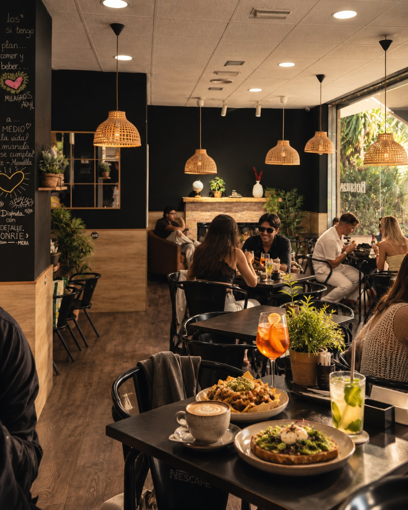
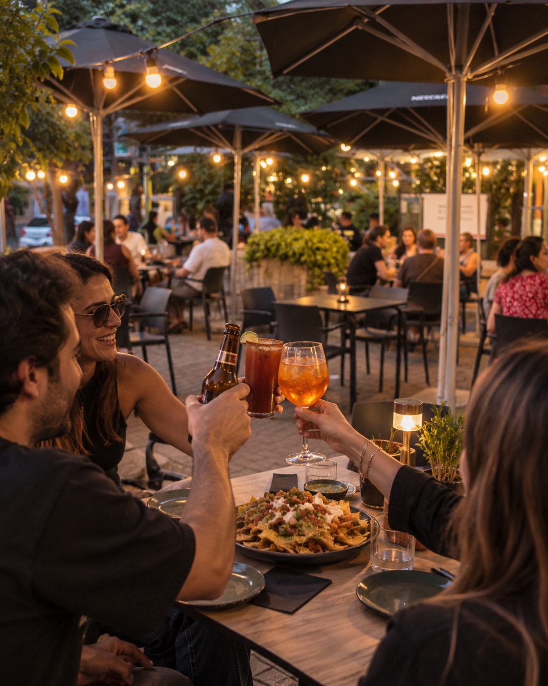
Cuatro momentos
Cada hora tiene su mesa. Elige la tuya.

Primera hora
Luz suave, café y una conversación tranquila antes de que el día se acelere. Para quien madruga y para quien se lo merece.
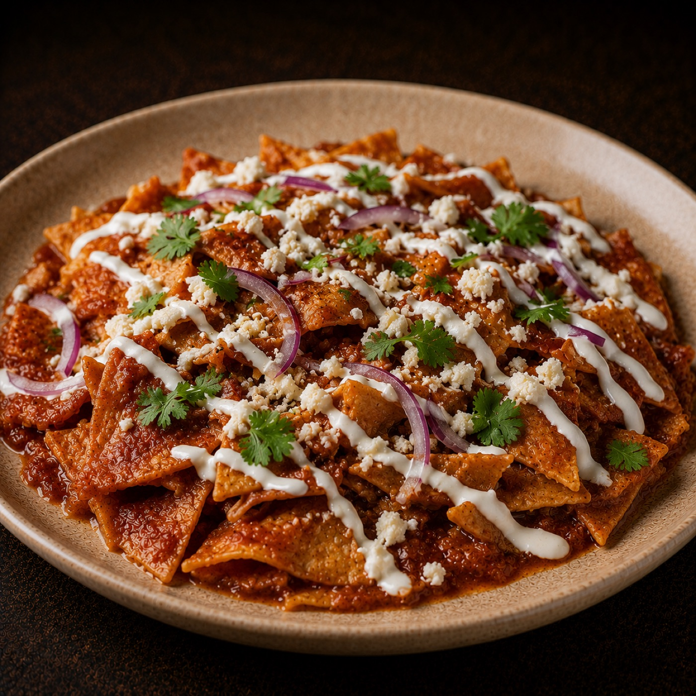
Mediodía
Mesa compartida, plato con carácter y la sensación de que hoy no hay prisa. Comer de verdad, en buena compañía.
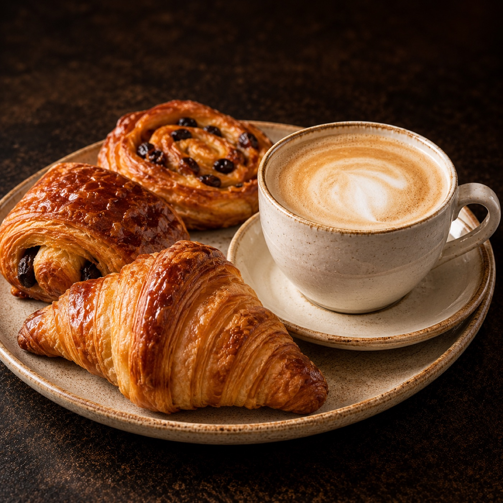
Media tarde
La pausa que ordena la tarde: algo dulce, un buen café y un rato para ponerse al día.
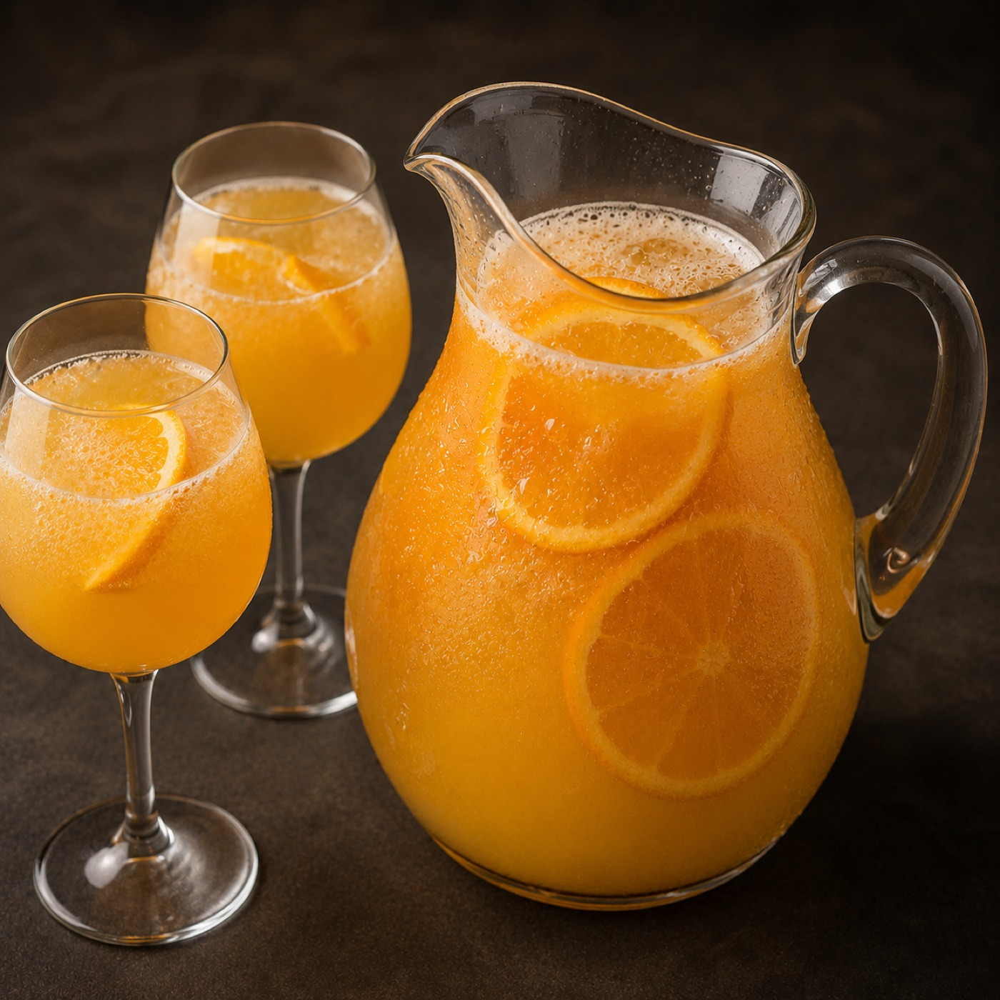
Final de tarde
Terraza, coctelería y la luz de Valencia cayendo despacio. El momento en que la conversación se pone buena.
La mesa
Una propuesta de cocina y coctelería latina contemporánea, pensada para compartir y para volver. Sin folclore y sin disfraz: sabor, oficio y buena mesa.
La carta se publicará aquí en cuanto esté confirmada.
Desayunos y café, con calma.
Brunch y almuerzo para compartir.
Café y dulce a media tarde.
Coctelería y copas en terraza.
Atmósfera
Cálido, un poco misterioso y muy de casa. Un refugio para quedarse.
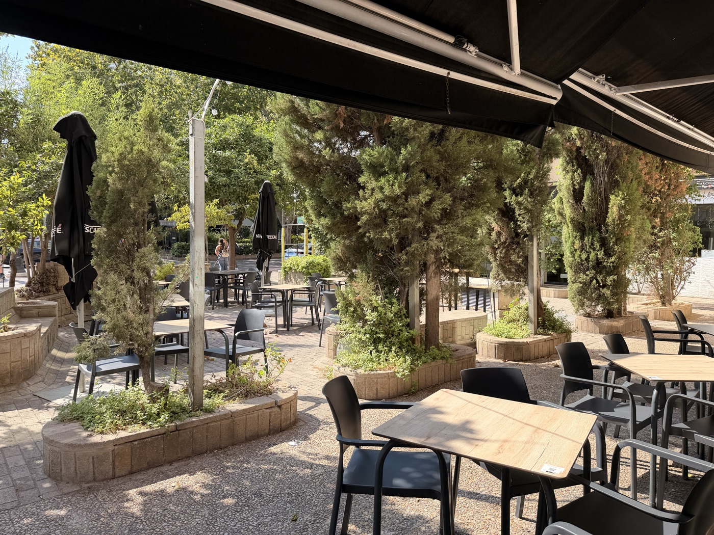
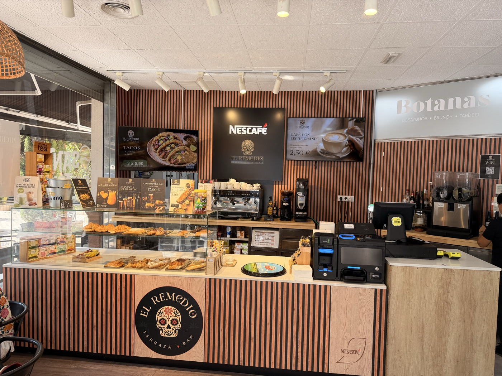
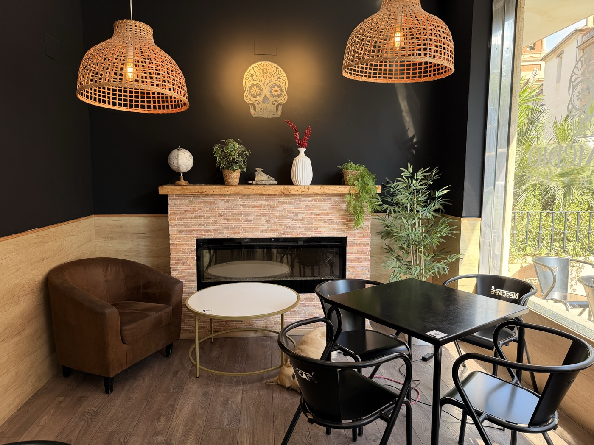
El Remedio · Quart 104
Dos locales en Valencia
Calle · Barrio · Terraza
El local del barrio. Terraza a pie de calle, sobremesa larga y tardeo con vecinos.
Comodidad · Movimiento · Encuentros
El local del encuentro. Café, comidas y citas cómodas, fáciles de llegar y de organizar.
Escríbenos o síguenos en Instagram. Las reservas se abrirán aquí en cuanto estén confirmadas; mientras tanto, elige el local que mejor te encaje.
Reservas: pendientes de confirmar.